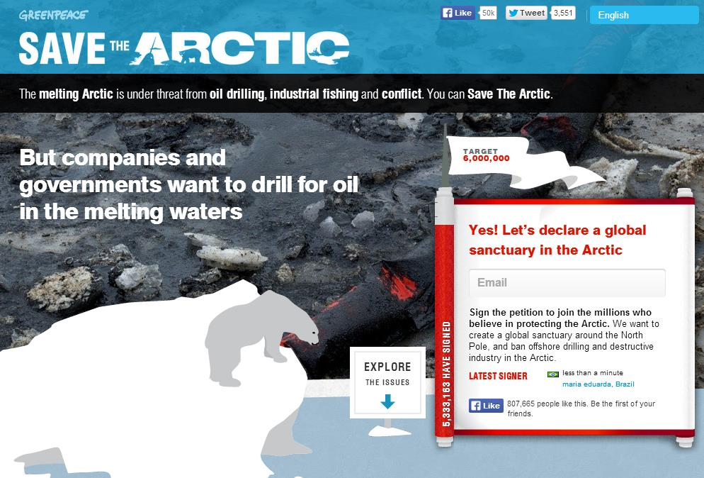
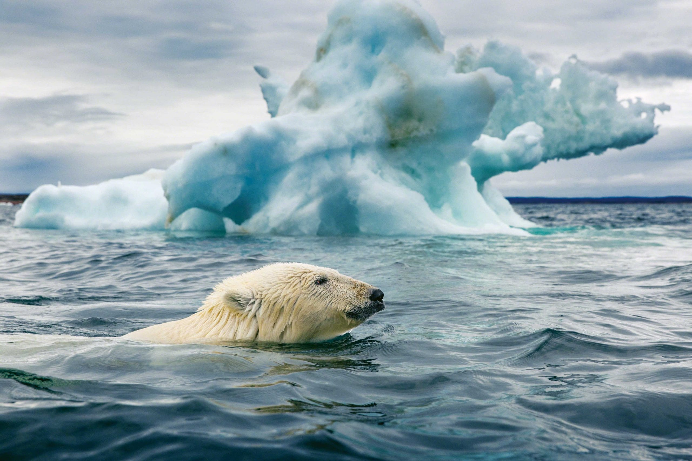

Save Sea Ice
During the long, sunless Arctic winter, temperatures normally plunge far below zero; sea ice thickens and spreads. But throughout most of 2016, conditions in the Arctic were anything but normal. In mid-November, a month before the full onset of winter, arctic sea ice actually began to melt—more than 19,000 square miles of ice disappeared, a loss on a scale never before seen so late in the year.
At the end of December, air temperatures near the North Pole spiked close to the freezing point, about 50 degrees Fahrenheit above normal.

The recent temperature spikes and late-season ice loss might have been unprecedented, but they weren’t unexpected—they’re what climate models have predicted might happen when steadily increasing greenhouse warming is added to natural variability.
But are they harbingers of an irreversible, runaway collapse of summer sea ice? Climate scientists once feared that global warming could trigger one. With reduced ice cover, the reasoning went, more solar radiation would be absorbed by open water, and less would be reflected into space. Eventually the ocean would absorb so much heat that summer sea ice would no longer form—the Arctic would have passed a tipping point.
Health to Animals

Because of melting sea ice, it is likely that more polar bears will soon starve, warns a new study that discovered the large carnivores need to eat 60 percent more than anyone had realized. Turns out they are high-energy beasts, burning through 12,325 calories a day—despite sitting around most of the time, according to a unique metabolic analysis of wild bears published Thursday in Science.
Polar bears rely almost exclusively on a calorie-loaded diet of seals. To minimize their energy consumption the bears still-hunt, waiting for hours by seals’ cone-shaped breathing holes in the sea ice. When a seal surfaces to breathe the bear stands on its hind legs and smacks it on the head with both of its front paws to stun it. Then the bear bites it on the neck and drags it onto the ice.
One bear lost close to 44 pounds, including her lean muscle, in 10 days. This bear even leapt into the sea in a failed attempt to catch a seal swimming by.
Melting ice sheets would increase the amount of warm and freshwater in polar marine ecosystems. This would slow "deep water formation," the development of cold, saline, nutrient-rich water on which entire marine ecosystems depend.